前々回からマンションの価格に周辺環境がどのように影響を及ぼしているか、明らかにしています。今回はいよいよ最終回。周辺の「地価」に着目します。
1. データの準備
(1)まずデータをダウンロードしましょう。
(2)今までデータをお配りしてきていましたが、今度は皆さん自力で取りに行ってみましょう。
(3)国土交通省がGISのデータを整備した国土数値情報ダウンロードというサイトがあります。このリンクに飛び、「1.国土(水・土地)」→「地価公示(ポイント)」に進みましょう。
(4)サイトの下の方がに都道府県別に時系列にデータが整備されています。ここから一都三県の令和2年のデータをダウンロードしてみましょう。
(5)データをいつもの場所に移動させ、解凍します。
2. データの表示
2.1 背景の表示
ただ点やポリゴンをプロットしても、それがどこなのかわかりません。そこで背景に地図を導入します。
(1) QGISを開きます。
(2) メニューバーから「プロジェクト」→「新規作成」を選びます。
(3) ブラウザウインドウの「XYZ Tiles」から「OpenStreetMap」を選択し、東京を拡大します。そうするとGoogle Mapのような背景が見えてきます。
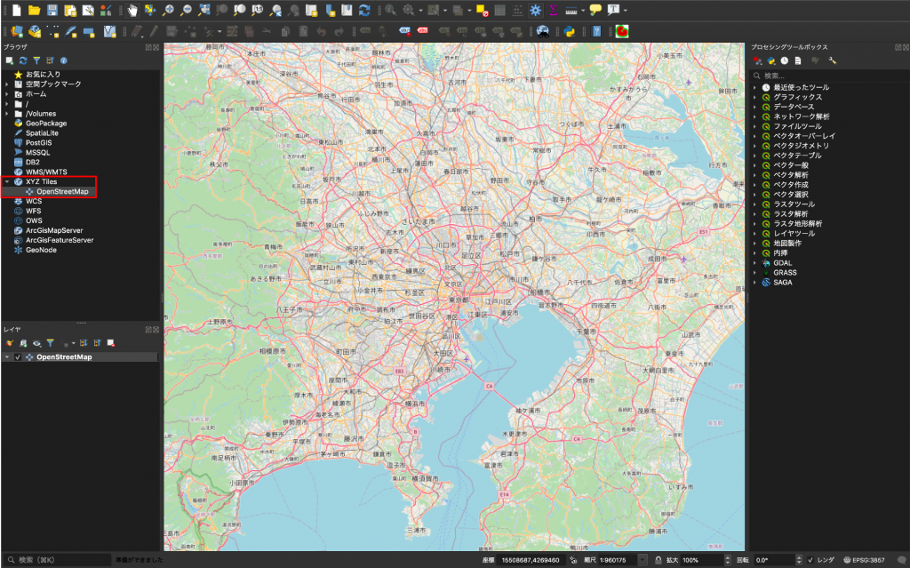
(4) 右下の「レンダ」の右に「EPSG: ????」と書かれている場所があります。まずこれをクリックしましょう。そうすると「プロジェクトのプロパティ」が開きます。開いたら最近使用したCRSにEPSG:2451があれば、これを選択します。なければ検索欄に2451と入力し、あらかじめ定義されたCRSに出てきたEPSG2451をクリックして、右下のOKをクリックしましょう。。
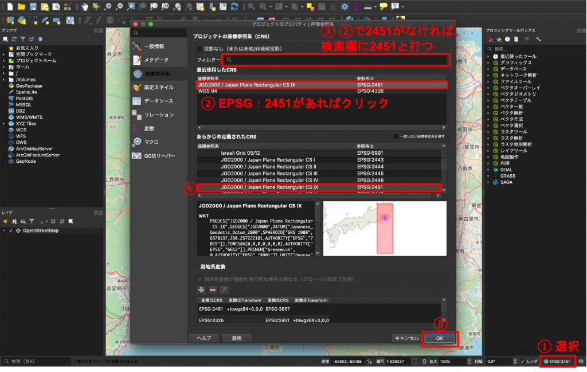
2.2 皆さんが作成した住宅データの表示
みなさんが集めたデータや前回作ったデータをプロットしていきます。データソースマネージャを開き、前回ダウンロードしたデータの中からsuumo1k.shpを開きましょう。
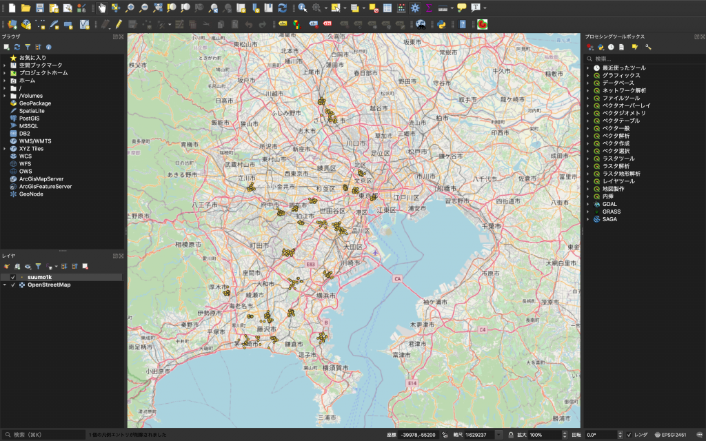
ここまでできたら準備は終わりです。
3. 空間補正をやってみよう
1でダウンロードしたデータをまず整形して分析できる形にし、ポイントとポイントの間の値を予想してみます。
3.1 一都三県のデータをマージする
(1) 1でダウンロードしたデータを全て追加してみましょう。
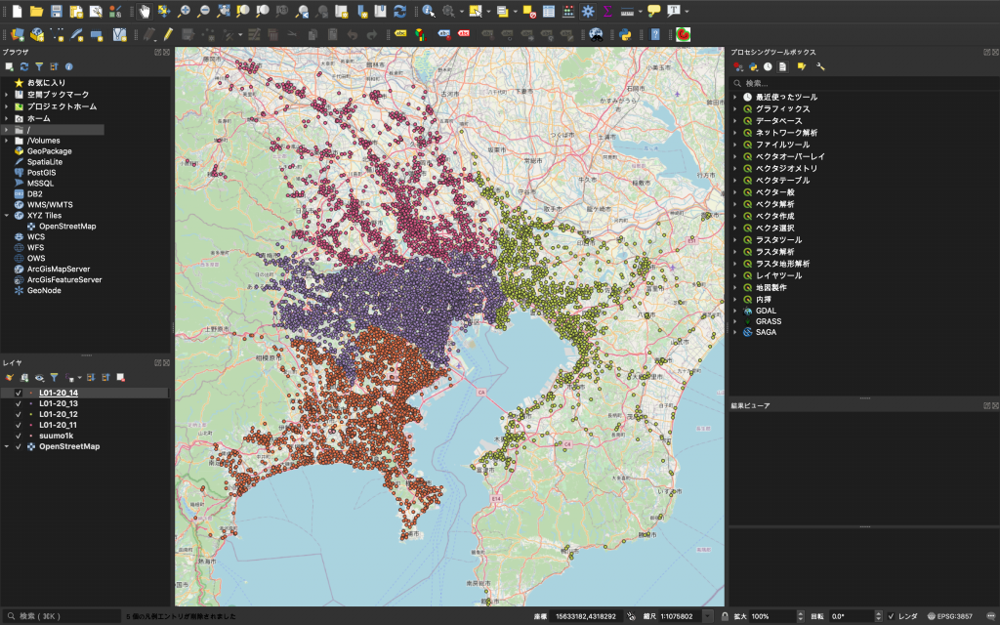
(2)次に一つのshpファイルにまとめてみましょう。メニューバーから「ベクタ」→「データ管理ツール」→「ベクタレイヤのマージ」に進みます。
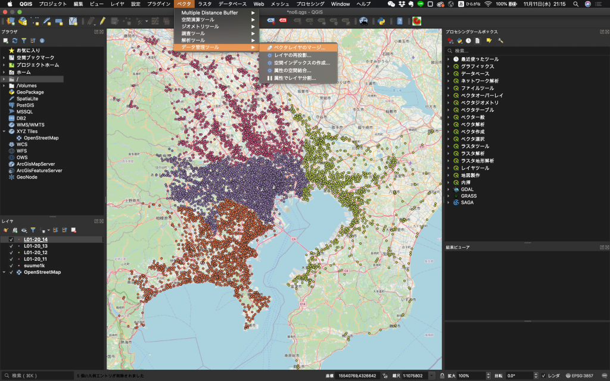
(3)「ベクタレイヤのマージ」パネルが開いたら、入力レイヤの右にある「…」を開きます。マージしたいデータの左にチェックを入れます。
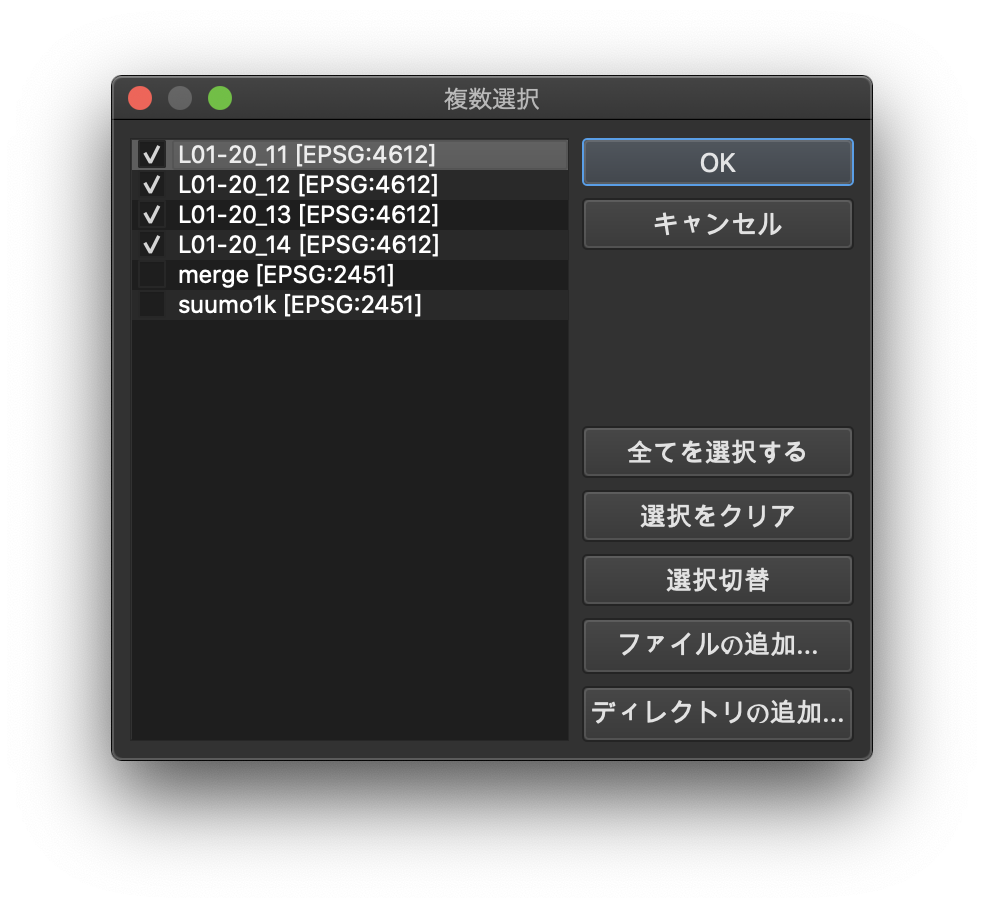
(4)変換先の座標参照形はEPSG2451にし、いつもの場所にmerge.shpという名前で出力します。
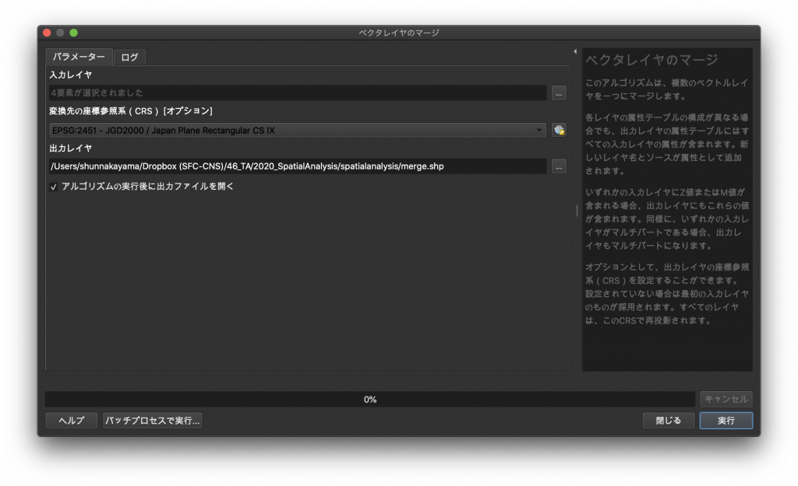
(5)下図のように、一つの色で描画されていればOKです。
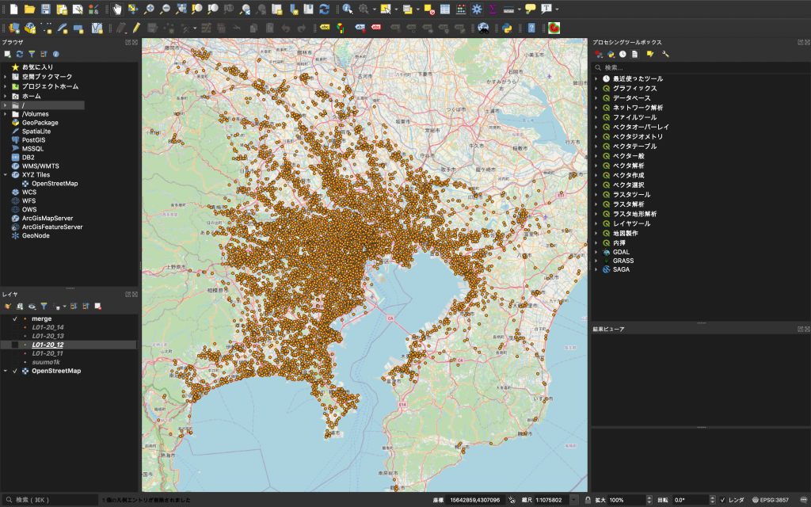
(6) mergeしたものの属性テーブルをみてみましょう。いっぱい数字がありますね。それぞれはどう意味でしょうか。
(7)もう一度国土数値情報ダウンロードに行って確認します。
(8)L01_006が地価を表す列だということがおわかりいただけたかと思います
(9)しかし、L01_006の列は数字が左に寄っていますね。これは数字ではなく、テキストとして認識されているということです。これは困りますので、数字形式直します。左上に見える「ぺんマーク」をクリックし、編集モードにします。
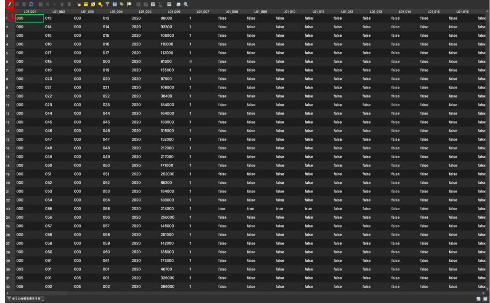
(10)編集モードになったら、画面上部のアイコンのうち「新規フィールドアイコン」をクリックします(下図①を参照)。そうするとフィールドの追加画面が出てきますので、下図②のように設定します。そして③の計算式を「Chika=L01_006」となるよう設定・入力しましたら、④の全部更新ボタンをクリックします。
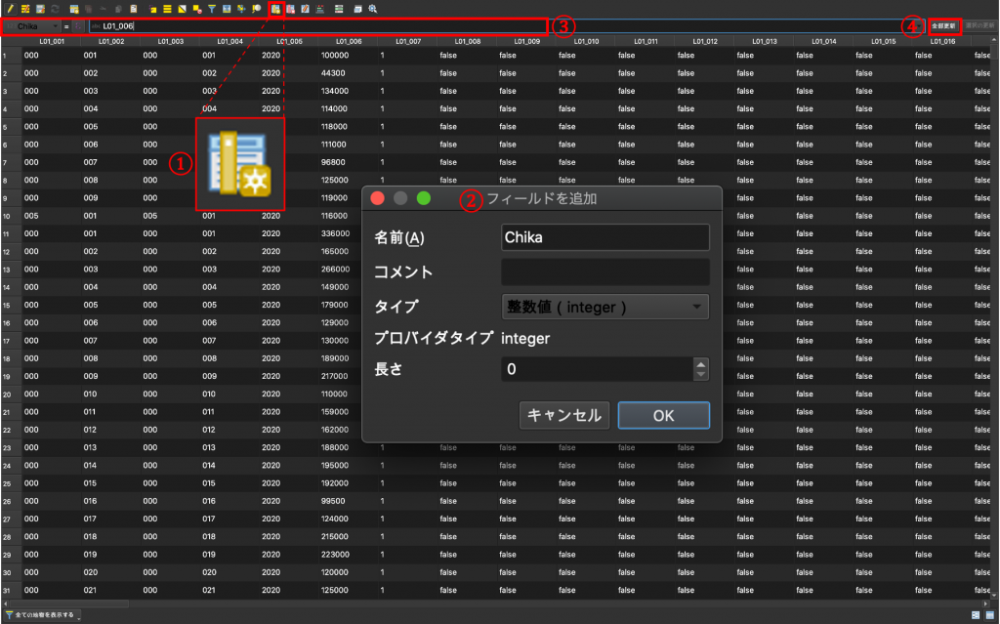
(11)無事できていることを確認したら、ぺんマークをもう一度クリックし、編集を保存しましょう。
3.2 いよいよ空間補正に
空間補正、つまり点と点の間の空白地帯の値を推測しようとするものです。いろいろな推計方法がありますが、ここではIDWという方法を用います。ここでこのQGISファイルを一旦保存しましょう。必ずです。
(1)プロセシング>ツールボックス>内挿>逆距離荷重法(IDW)補間を開きます。
(2)ベクタレイヤにMerge(Chikaじゃないよ！ごめんね！)、内挿対象の属性をChikaにしましょう。これができたら画面真ん中右の「+」をクリックします。そして、距離係数はそのまま、内挿する領域は右の「…」から「レイヤの領域を使う」(ない場合は「レイヤから計算」)を選びます。そして出力ラスタサイズをピクセルサイズをXY共に1000にしましょう。そして出力レイヤ名「idw.tif」を設定したら、実行を押します。
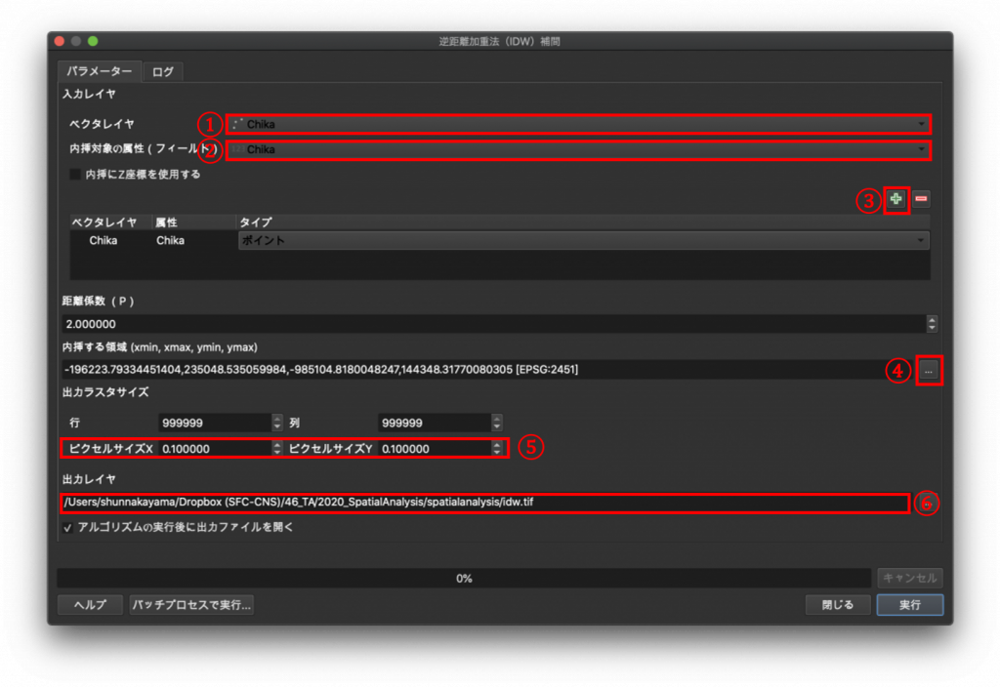
(3)こんなふうになれば一旦OKです。
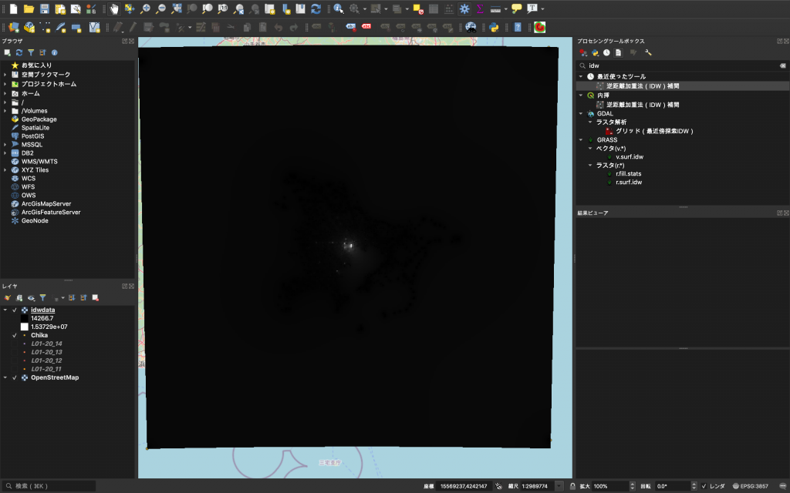
(4)しかし、先ほどセルサイズを1000に設定したので、1000m×1000mが1ピクセルになるような超低解像度でしか表示されていません(下図は透明度を上げて見やすくしています)。もちろん100mや10mくらいでやりたいのは山々なのですが、皆さんのPCでできるレベルを超えてしまいます。
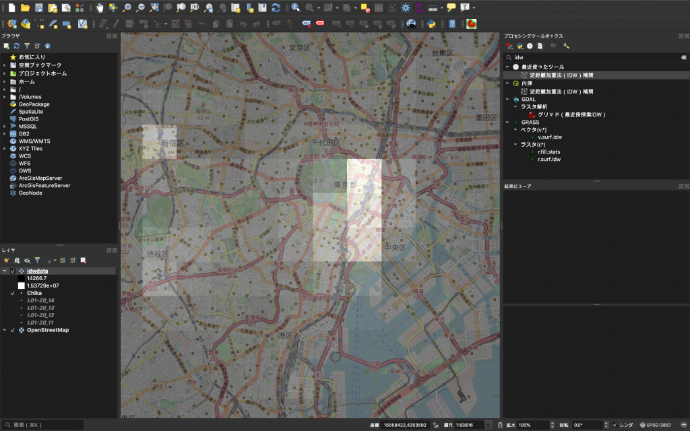
(5)もしハイスペックなPCでやると、このような結果が得られます。
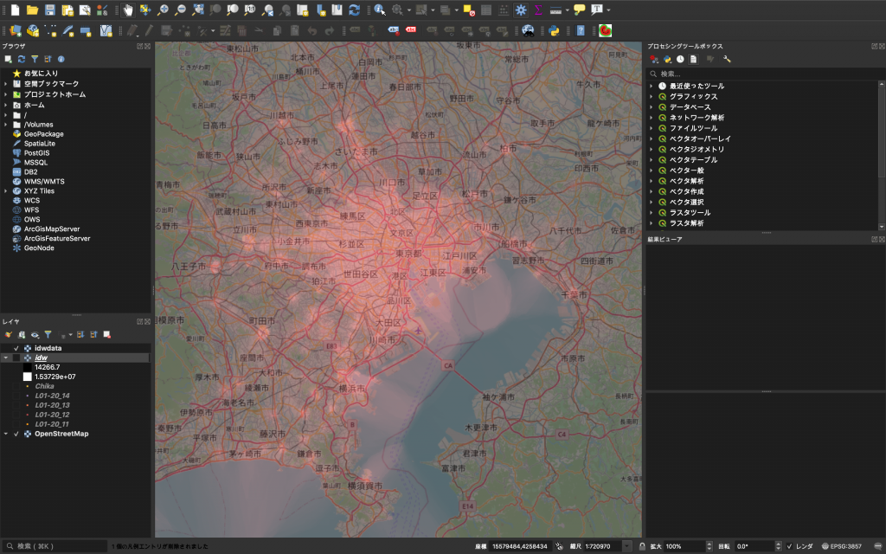
(6)そこで今週も3分クッキング方式で皆さんにお配りします。ファイルサイズが大きいのでSOLから落としてください(idwdata.tiff)。なお、皆さんのPCに入れてもバグらないように解像度は少し落としています。
(7)データをQGISに読み込んだら、プロパティを開きます。そして左のメニューから「シンボロジ」を選び、レンダリングタイプをマルチバンドカラーにします。そしてその下にあるカラーレンダリングの中の「色相」の横にある着色をクリックします。
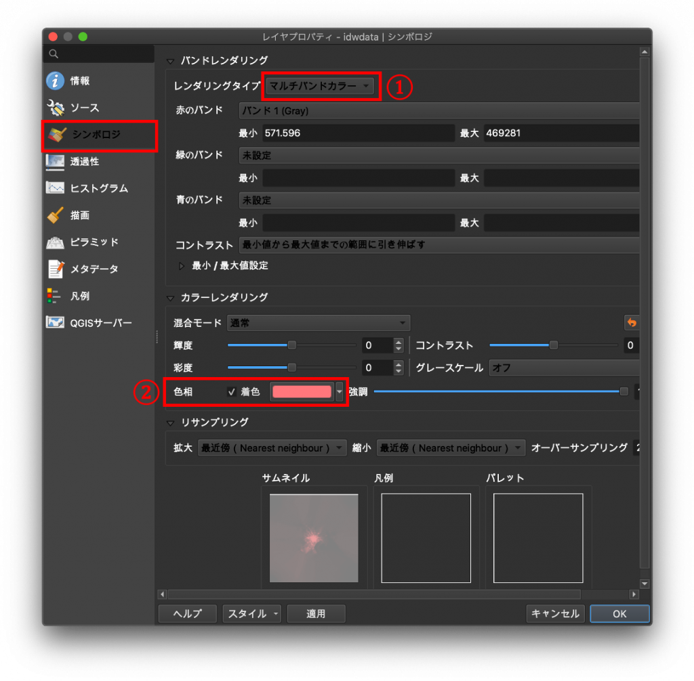
(8)できたら、そのまま左のメニューから透過性を選び、グローバルな不透明度を50%にします。そして「OK」をクリックして閉じます。そうすると、上と同じように表示されたはずです。
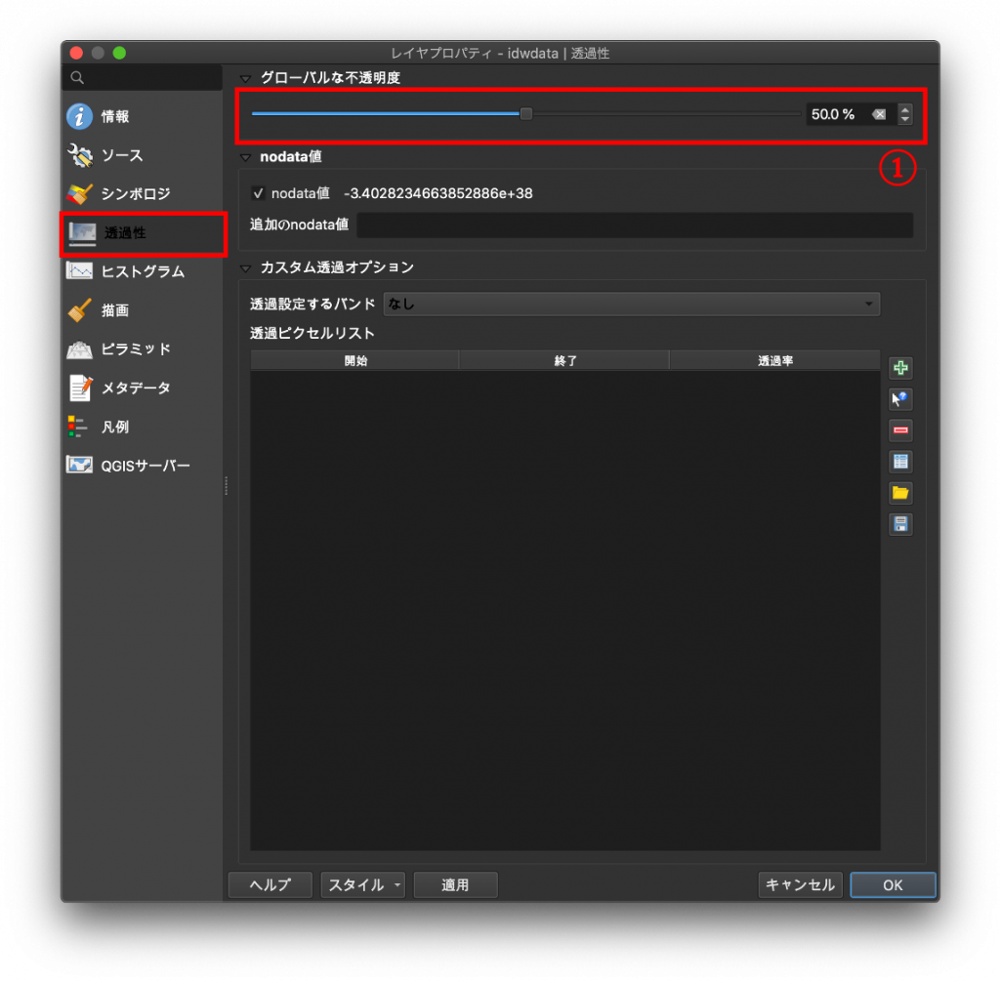
4. ポイント別のラスタの値を抽出してみよう
では、いよいよ各物件の予想される地価を抽出していきます。
(1)ジオプロセシングツールボックス(出てない人はメニューバーから「プロセシング」→「ツールボックス」と進むことで表示することができます)から、「ラスタ解析」→「ベクタレイヤにラスタ値を付加」を選びます。
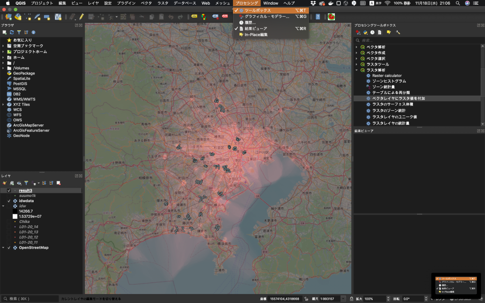
(2)「ベクタレイヤにラスタ値を付加」の画面が開いたら入力レイヤにsuumo1k、参照するラスタレイヤにidwdataを選びます。そして出力レイヤに保存先と保存名(result3.shpにしています)を入力したら、右下の「実行」ボタンをクリックしましょう。
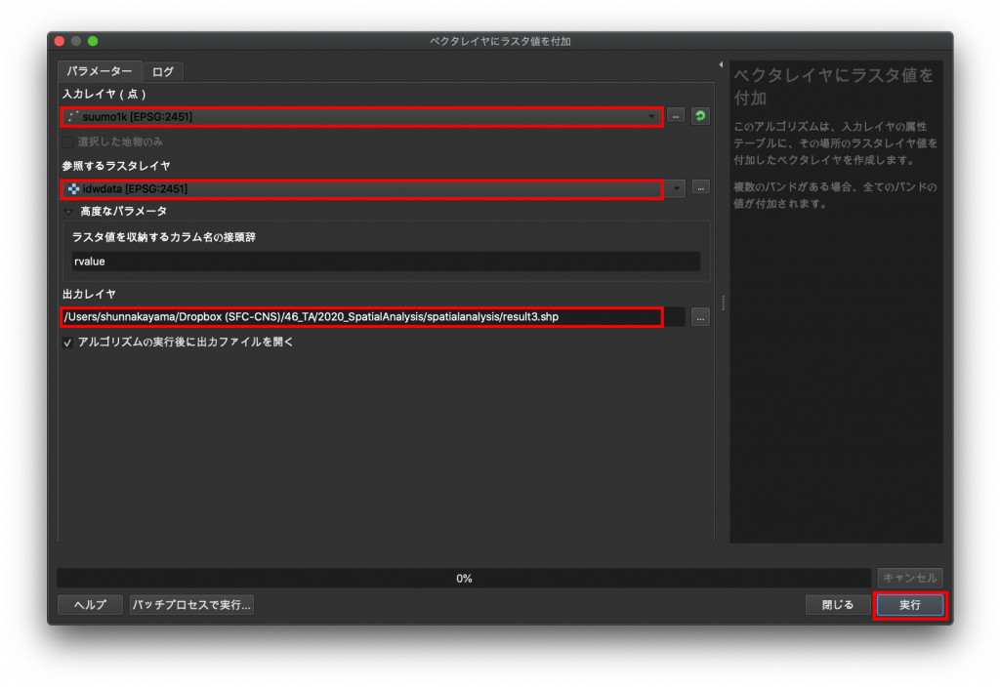
(3)できたら、さっそく属性テーブルを開きます。文字化けしていますので、プロパティにいき、「ソース」からエンコーディングをShift_JISにしましょう。そしてもう一度属性テーブルを開けば、このように表示されているのではないでしょうか。
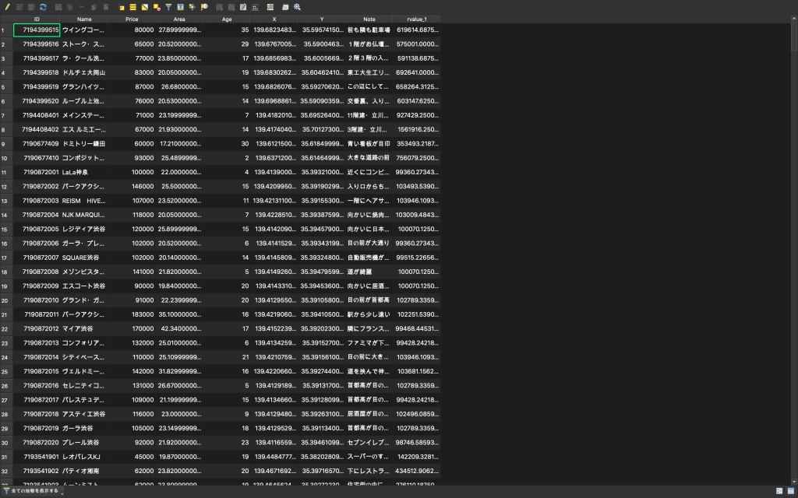
(4)ここまでできたら、演習4や演習5の成果と連結させてみたいと思います。テーブル結合は先週もやりましたが、覚えていますか？もう一度やってみましょう。
(5) result.csvとresult2.csvをインポートしましょう。インポートしたら、文字化けがあるので、プロパティのソースからエンコーディングをShift_JISに設定します。もし見つからない人は、下記のデータをダウンロードして使ってみてください。
GIS data No6.1
(6)result3のプロパティを開き、左のメニューからテーブル結合を選びます。左下から「+」をクリックし、結合レイヤにresult、結合基準の属性にID、ターゲント属性もIDを選びます。そして動的フォームにチェックを入れましょう。結合する属性にチェックを入れたら緑被率のみ、チェックを入れます。他のデータでもPriceやAreaの列はあるので、必要なデータだけくっつけちゃおう、という考えです。さらに結合する属性の接頭辞にもチェックを入れ、文字を消します。ここまで設定したら、OKをクリックします。同様に、result2も設定します。result2の場合はNUMPOINTSとDistanceにチェックを入れましょう。2つとも設定し終わったら、画面下の適用を押して、OKをクリックしましょう。
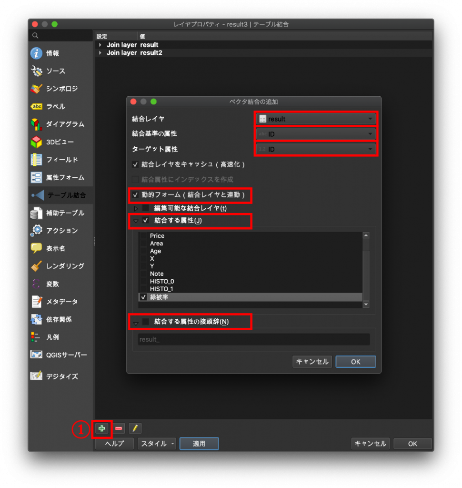
(7)無事できたら属性テーブルを開いて確認してみましょう。
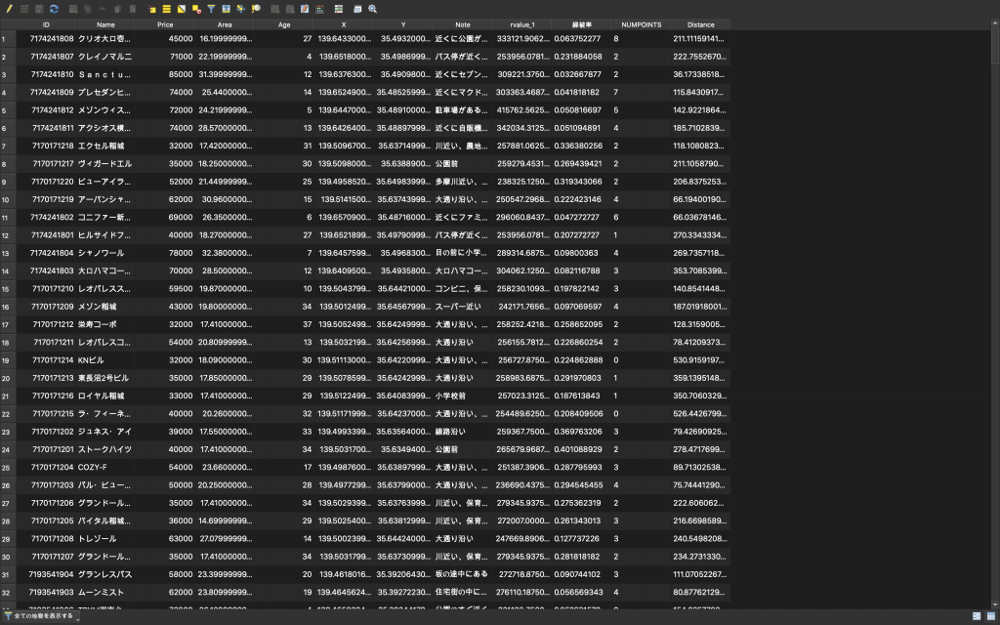
(8)確認できたら、csvに書き出します。形式がcsvになっていることを確認し、ファイルをいつもの場所に適当な名前(finalresult.csvなど)をつけて保存しましょう。エンコーディングはShift_JISです。
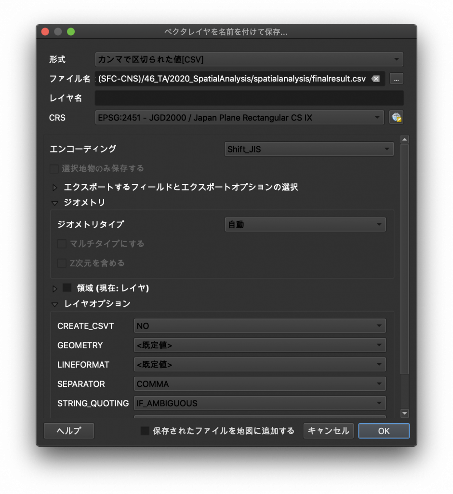
ここまでできたら、QGISを保存して閉じます。
レポート課題
最後に出力したファイル(finalresult.csv)を使って、分析をしてみてください。そしてそこから読み取れたことを400字程度にまとめて、記述してください。また、全7回の演習を終えた感想と、演習の改善案(演習内容や進め方など、なんでも結構です)について、記述してください。お疲れさまでした。
2020.11.18 QGIS版 初版（政策・メディア研究科 博士課程 1年 中山俊）
2023.10.1 QGIS版 第二版（政策・メディア研究科 特任助教 中山俊）
2024.10.1 QGIS版 第三版（政策・メディア研究科 特任助教 中山俊）